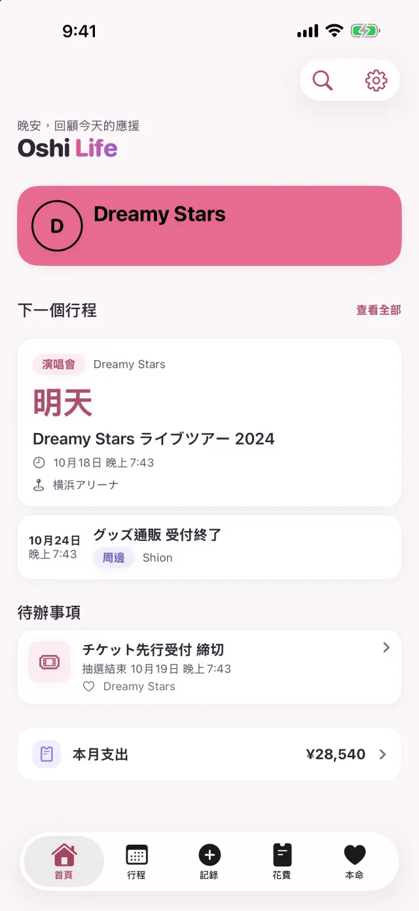
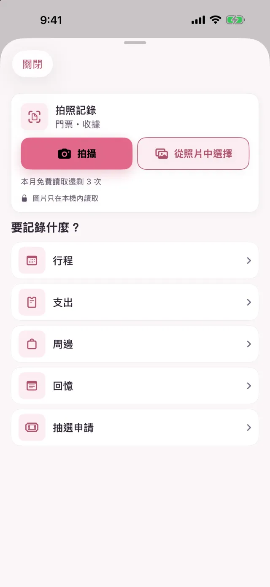
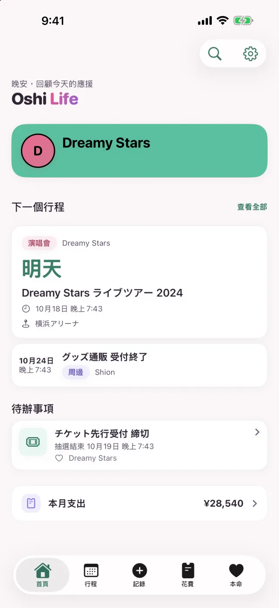
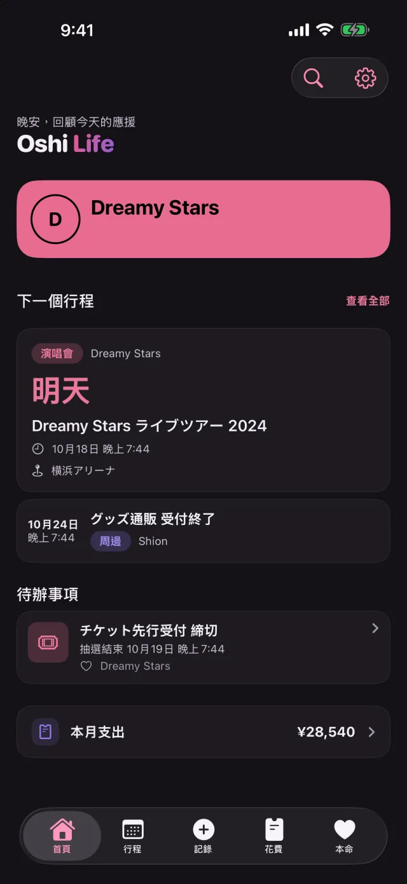
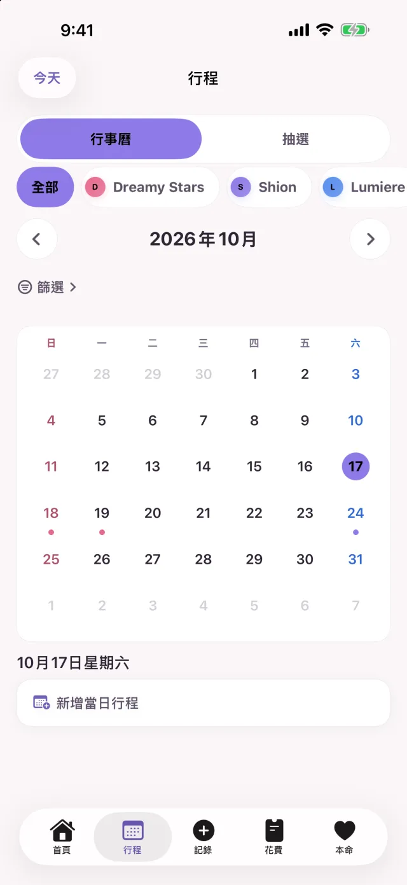
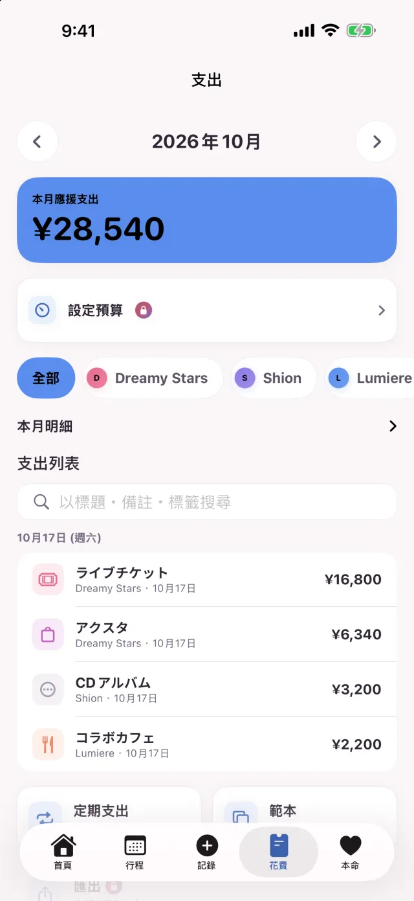
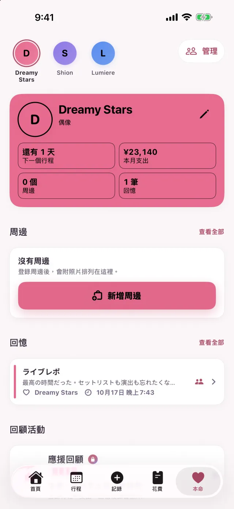

Free
可以免費使用的方案。
| 本命 | 3 位 |
|---|---|
| 行程 | 30 筆 |
| 支出 | 50 筆 |
| 回憶 | 50 篇 |
| 周邊 | 50 件 |
| 同時進行的抽選申請 | 1 筆 |
| 拍照記錄 | 每月 3 次 |
抽選看板建立的行程不計入行程數。落選的申請和已付款的申請，不算作同時進行的申請。
追星記錄 App Oshi Life 2.0
拍下門票或收據，就會產生行程、支出或周邊的草稿。確認內容後儲存，需要手動輸入的只有想修改的地方。申請截止、中選公布，還有花在本命身上的錢，都能用一支 iPhone 管理。
拍照記錄在 Free 方案中每月最多 3 次（門票和收據合計）。Premium 不限次數。
免費（含 App 內購買）· iOS 17.0 或以上版本的 iPhone

拍照記錄
遠征回來，還得把錢包裡的收據一張張輸入。現在，這件事可以換成拍下來、再確認讀取的內容。
如果是買了壓克力立牌和應援毛巾的收據，每個品項會各建立一筆周邊和一筆支出。稅金等其餘金額歸入「其他」支出；讀不出品項時，就把合計記為一筆支出。
讀取演出名稱、日期時間、場館、座位和票價，產生行程的草稿。讀到票價時，儲存行程後還能把票價記為支出。
除了拍照，也可以從照片中選擇。讀錯類型時（把門票當成收據，或反過來），可以用同一張圖片改成另一種類型重新讀取。
讀取在 iPhone 內完成，不會為了讀取而把圖片或文字傳到外部。
Free 方案每月最多 3 次（門票和收據合計）。Premium 不限次數。

本命的顏色和深色模式
按鈕、標籤和卡片的強調色，會變成目前所選本命的顏色。本命是粉紅色就變成粉紅色，是薄荷色就變成薄荷色。
為每位本命選好顏色後，切換到那位本命時，整個 App 的顏色也會一起改變。
預設跟隨 iPhone 的設定切換。也可以在設定的「外觀」中固定為淺色或深色。


行程和抽選
報名抽選後，把這筆申請登記到 Oshi Life。申請截止、中選公布和付款期限會排進行程，快到時會收到提醒。
輸入報名的演出，以及截止和公布的日期時間。
申請截止、中選公布和付款期限會自動加入行事曆。
記錄中選並輸入公演日後，會加入演出的行程。
持續記錄抽選結果，就能看到目前為止的中選率。
申請截止和付款期限會在前一天提醒，中選公布則在公布時提醒。
除了前一天，申請截止和付款期限還會在 3 天前和當天早上提醒。
用「行程」標籤頂部的［行事曆｜抽選］切換到抽選，申請會依「申請中」「等待開獎」「待付款」「準備參戰」「落選」分開排列。
演唱會、發售、直播、電視、廣播、YouTube、周邊等。場館和本命的名字都能自由輸入。

花費
門票、周邊、交通費、住宿、餐飲。記錄的支出會依本命和分類統計，在「花費」標籤裡可以按月查看。
合計、與上個月的差額、明細和列表，都集中在「花費」標籤的一個頁面裡。
常用的支出可以從範本輸入。把訂閱費和會費設成定期支出，到期的部分會自動加入。
登錄周邊時打開「同時記錄為支出」，支出記錄也會一起建立。
本命有 2 位或以上時，明細和列表可以依本命篩選。
設定每月預算後，剩餘金額會顯示在首頁和小工具上。達到預算的 80% 和超出時會提醒你。

本命
回憶可以附上照片和歌單留存。本命頁面集中了資料、紀念日、周邊和回憶。
選擇分享的回憶，標題、內文和歌單會出現在「大家的報告」，其他人也能看到。照片不會分享出去。
開始推本命以來的天數、生日、紀念日。到了這些重要的日子，首頁會為你慶祝，當天還能免費製作紀念卡片。生日和紀念日當天早上 9 點會收到提醒。
年度總結可以免費做成分享卡片。

其他
也能從主畫面、鎖定畫面和 Siri 使用。
「本命」小工具會顯示本命的圖片、推了多少天，以及距離下一個行程的天數。「倒數」和「本月應援花費」小工具是 Premium 功能。
開演前 6 小時起，鎖定畫面會顯示距離開演的倒數。支援的 iPhone 還會顯示在動態島中。
把日期時間、場館、交通和住宿、攜帶物品整理成一張圖片，傳給同行的人。金額預設不會放進圖片。
可以用 Siri 或捷徑新增行程、查看下一個行程和本月支出。
以訪客身分也能使用和登入後相同的功能。之後用 Apple 或 Google 登入，記錄也會保留。
可以設定在打開 App 時，用 Face ID、Touch ID 或密碼解鎖。
Free 和 Premium
Free 方案可記錄的數量有上限。達到上限後，已有的記錄仍然可以照常檢視、修改和刪除。
可以免費使用的方案。
| 本命 | 3 位 |
|---|---|
| 行程 | 30 筆 |
| 支出 | 50 筆 |
| 回憶 | 50 篇 |
| 周邊 | 50 件 |
| 同時進行的抽選申請 | 1 筆 |
| 拍照記錄 | 每月 3 次 |
抽選看板建立的行程不計入行程數。落選的申請和已付款的申請，不算作同時進行的申請。
按月或按年自動續訂的訂閱。價格請在 App Store 確認。
除非在本期結束前至少 24 小時關閉自動續訂，否則訂閱會自動續訂。購買後，可以在 iPhone 的設定中管理或取消訂閱。
支援
如果這裡找不到你的問題，請透過頁面最下方的「聯絡我們」詢問。
讀取在 iPhone 內完成，不會為了讀取而把圖片或文字傳到外部。使用 Premium 時，附在支出上的收據和回憶裡的照片也會儲存到雲端。
可以免費使用。Free 方案可記錄的數量有上限（見上表）。達到上限後，已有的記錄仍然可以照常檢視、修改和刪除。
不需要。以訪客身分也能使用和登入後相同的功能。之後用 Apple 或 Google 登入，記錄也會保留。
只有選擇分享的回憶會出現在「大家的報告」中。可以一篇篇決定是否分享，照片不會被其他人看到。
支援 iOS 17.0 或以上版本的 iPhone。語言支援日文、英文、韓文和中文（簡體、繁體）。